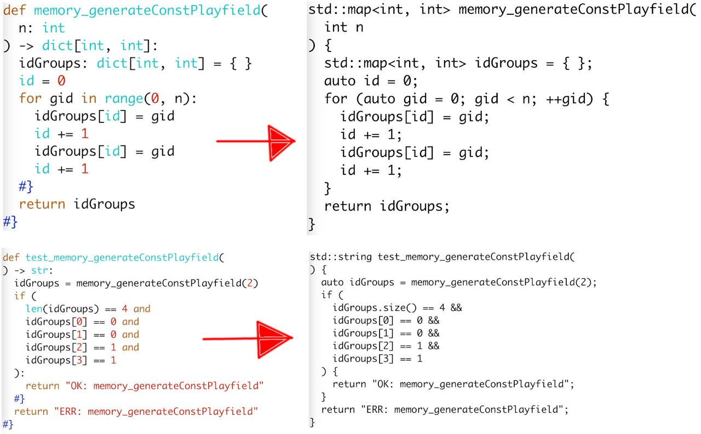

2024-04-11 00:00
To verify code portability, I selected the following platforms and languages:
I created a simple "Hello World" example for each language to understand the basic requirements of each platform.
By the way, OpenWrt turned out the most complex platform to create "Hello World" for, because my TP-Link TL-MR3020 r1 router is considered obsolete since 2018. I had to use the old 17.01.7 firmware, which took about three weeks.
For the whole month I was asking myself the same question: "Which language should I choose as a starting point to convert to other languages from?" Initial considerations were pointing me to C++ due to strong types. However, as soon as I found out Python has Type hints, I chose Python.
Python is good because:
However, not every Python code will suite the language conversion instrument under development. Only the code that satisfies the constraints of the Limited language model.
Limited language model is a subset of Python with various restrictions in both syntax and a set of available functions. Here is a glimpse of those restrictions, the image below depicts Python to C++ conversion result:

I'm going to write game logic for "Memory" in Python and convert it to C++ by the instrument under development.